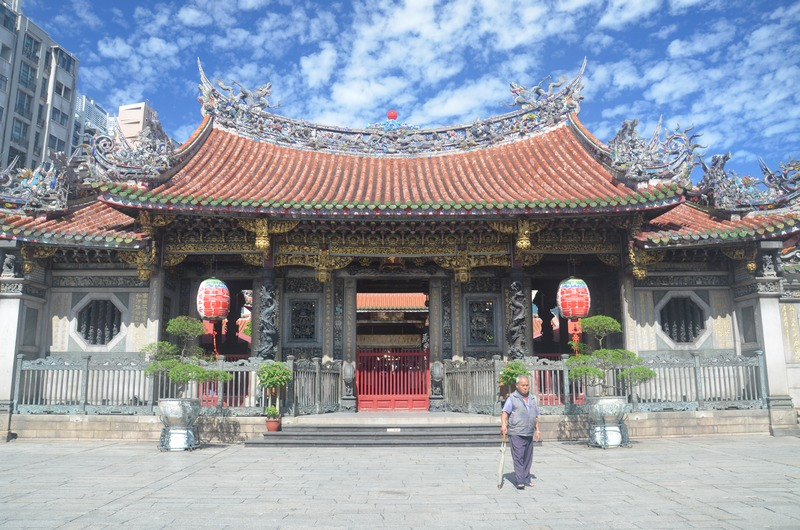
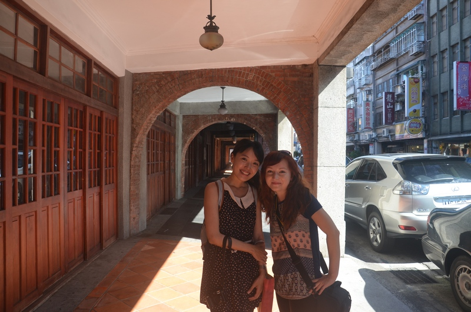
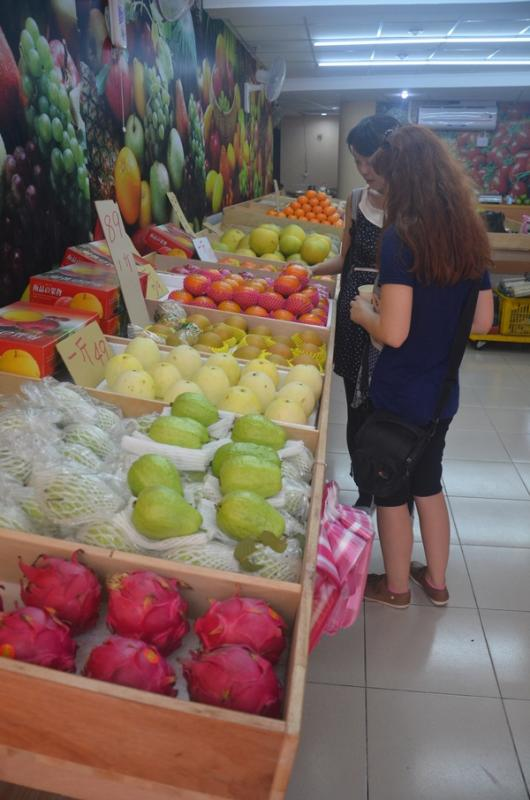
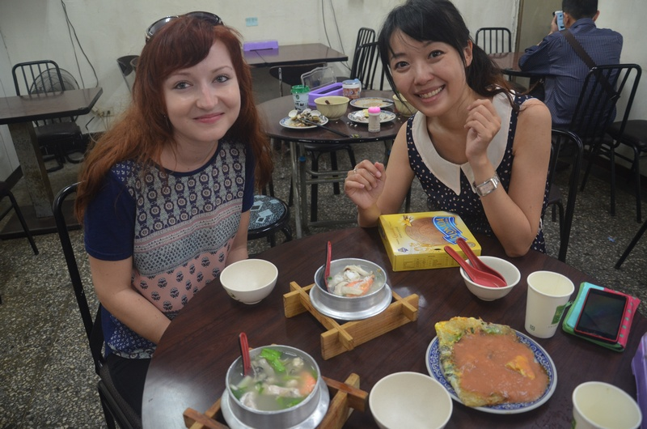
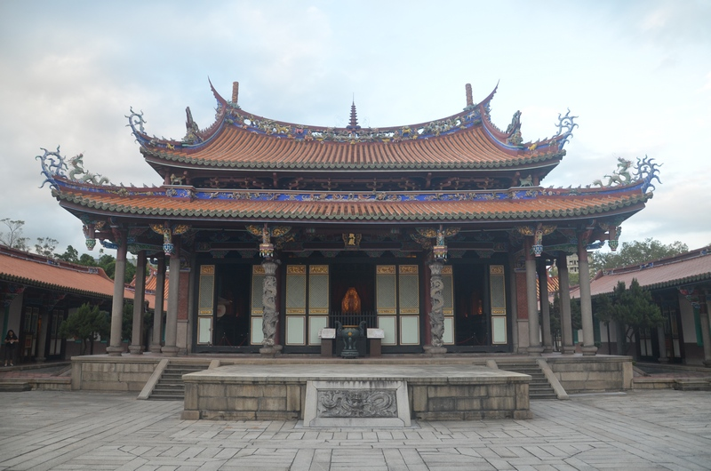
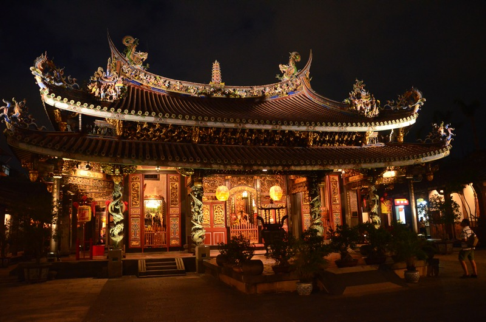
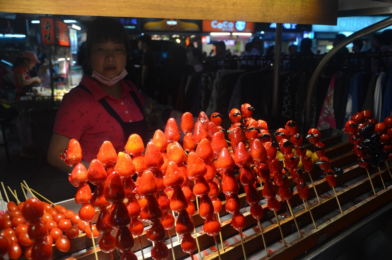
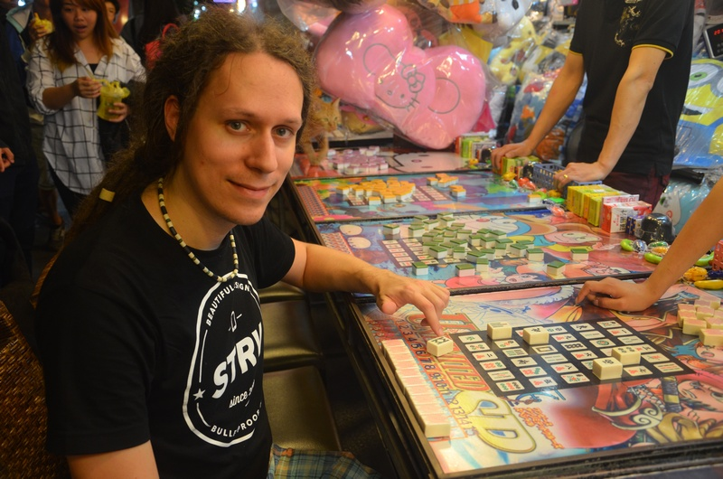
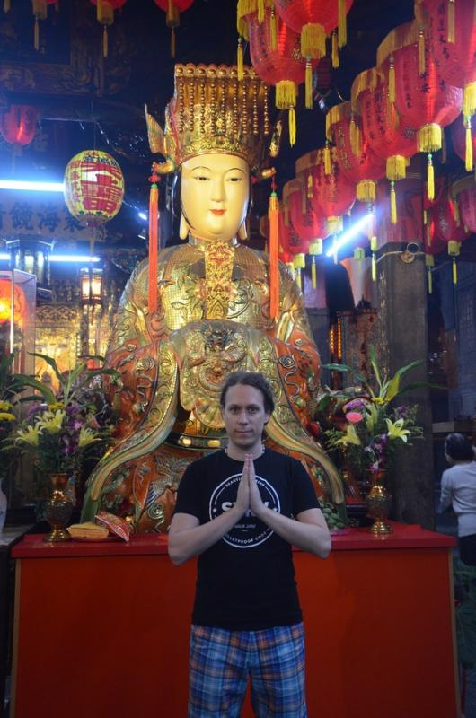

Ráno po probuzení vedly naše první kroky k metru, kde jsme si potřebovali vyřídit Easy Card - kartu na městskou hromadnou dopravu, která funguje na stejném principu, jako třeba Oyster Card v Londýně. Nabijete penízky a vesele jezdíte, až dokud nedojdou :) Při svém odjezdu kartu vrátíte v metru a dostanete zpátky svou zálohu ve výši 100 taiwanských dolarů.
Co se týče kurzu a obecně cen na Taiwanu: 1 TWD odpovídá cca 0,7 Kč. Ceny se pohybují v dost podobných hladinách jako tady v Čechách, o něco dražší je jen balená voda. Obecně si ale myslím, že Taiwan patří mezi vůbec nejlevnější země, jaké jsem kdy navštívila. Co může být trošku problém, je placení kartou. V sámoškách typu 7 Eleven je většinou neberou, v restauracích a hotelech jak kde, v obchodech se suvenýry např. až od určité sumy… No nebylo to úplně lehké a radši jsme si s sebou brali víc hotovosti. Vždy se dá ale platit kartou na benzínkách a naopak na noční trhy bez hotovosti ani nechoďte :)
To jsem ale trochu odbočila. S Julií jsme si dali sraz u buddhistického chrámu Longshan, který patří k nejvýznamnějším náboženským místům ve městě. Najdete zde několik síní, z nichž každá je zasvěcena jinému božstvu. Vzadu můžete například uctít Macu, bohyni moří, která je nejoblíbenějším božstvem na ostrově. Vdavekchtivé dívky se pro změnu modlí u Starého muže pod Měsícem a za pomoci věšteckých kamenů se pokouší zjistit, zda brzy potkají toho pravého :D. A na boha literatury zase stojí frontu studenti ve zkouškovém.

Longshan temple
Chrám jsme prošli zatím jen tak v rychlosti a radši jsme se vrátili zpět k hlavnímu vchodu, abychom se neminuli s Julií. Setkání s ní bylo hrozně milé a přestože jsme s ní strávili jen několik hodin, bylo to moc fajn. Julia nás nejprve provedla chrámem a vysvětlila nám všechny rituály, které se tu odehrávají. A protože je velice starostlivá a mrzelo ji, že se nám kvůli svému stěhování do USA nebude moct věnovat déle, pořídila nám v chrámovém obchůdku dva amulety pro štěstí :-) A už teď můžu říct, že fungovaly skvěle, protože trable se nám na téhle dovolené skutečně vyhýbaly.

Poté, co jsme si prošli chrám, zavedla nás Julia na nedaleký trh a do historické čtvrti Bopiliao plné cihlových budov z období dynastie Čching, která často slouží jako kulisa při natáčení filmů. Sami jsme byli svědky natáčení nějakého záběru a Julia tam dokonce zahlédla jednoho známého herce :D.

Bopiliao
Poté jsme nasměrovali naše kroky k restauraci, kterou pro nás Julia vybrala. Cestou jsme se ještě zastavili v několika obchodech - zajímalo nás hlavně lokální ovoce, takže jsme si na ochutnání koupili třeba guavu (něco mezi naší hruškou a jablkem) nebo zelené mandarinky.

Tak co ochutnáme?
Restaurace zaměřená na plody moře vypadala na první pohled tak všelijak, ale jídlo bylo vynikající. Objednali jsme si nějaké polévky a ústřicovou omeletu se sladkokyselou omáčkou. Zatím jsem se ještě úplně nepřepnula z režimu evropského stravování, takže v polévce, kde plavaly všemožné mořské potvory, jsem se jen tak nimrala, zato ta omeleta byla úplně úžasná.

Prvotní rozpaky z asijské kuchyně
Taky jsme využili příležitosti a předali tu Julii nějaké dárky, které jsme jí přivezli - hlavně plyšového krtečka pro jejího půlročního Nathana, kterého nechala u rodičů v Taichungu. Během oběda jsme si povyprávěli všechny novinky a pak už jsme museli běžet do půjčovny aut, ve které pracuje Juliin kamarád a díky němuž jsme dostali na auto obrovskou slevu. Julia tu s námi prošla všechny formality a smlouvu. Její přítomnost pro nás byla k nezaplacení, protože personál v půjčovně neuměl moc anglicky (ano, divné, ale brzy jsme zjistili, že s angličtinou to na Taiwanu prostě vždycky nevyhrajeme).
Než jsme se nadáli, půlka dne byla fuč a Julia se musela vrátit rychlovlakem zpátky do Taichungu a pokračovat v balení kufrů. Bylo nám líto, že spolu nemůžeme strávit víc času, ale i těch pár hodin bylo lepší než nic a byli jsme jí moc vděční, že si našla čas přijet za námi až do Taipei, i když ji za pár dnů čekalo stěhování na druhý konec světa. Šli jsme Julii vyprovodit na metro, a protože jsme ještě nebyli tak moc unavení, rozhodli jsme se navštívit další chrámy, které se nacházely nedaleko.
Nejprve jsme zavítali do Konfuciova chrámu, který je krásným příkladem jižního stylu a taiwanského jemného zdobného umění. Konfuciánské chrámy obecně působí oproti až kýčovité přezdobenosti chrámů budhistických a taoistických trochu stroze, ale jejich atmosféra je mnohem klidnější.

Konfuciův chrám
Naprostým chrámovým skvostem, který při návštěvě Taipei rozhodně nesmíte vynechat, je opodál stojící taoistický Bao’an Temple. Tento chrám je plný vytříbených ukázek tradičního zdobného umění. Chrám byl založen už roku 1760 a v 90. letech prošel rozsáhlou renovací. Dnes je zařazen na seznam kulturního dědictví UNESCO.

Chrám Bao’an
Jak si můžete všimnout z fotky, na tomto místě nás zastihla tma. Překvapivě ale v době jejího pořízení bylo teprve okolo šesté hodiny večer. Na Taiwanu se zkrátka stmívá brzy a je potřeba s tím počítat. Není to ovšem jen aktuální roční dobou - i v létě tu slunce zapadá třeba jen o hodinu později než v listopadu.
A protože už nám samozřejmě od oběda vytrávilo, rozhodli jsme se vydat za dalšími nejen gastronomickými zážitky na nedaleký noční trh v Shilinu. Shilin je trh spíš pro turisty, místní sem už prý moc nechodí, každopádně pokud chcete poznávat místní kuchyni, nasávat atmosféru a zjistit, jak moc smrdí “stinky tofu” - lokální gastrospecialita, není lepšího místa, kde s tím začít.
My jsme si tu pěkně nacpali pupíky. Ochutnali jsme čerstvé ovocné džusy, smažená křepelčí vejce, jablka ve slanině, rajčata v cukrové polevě a ano, došlo i na bubble tea, které vymysleli právě tady na Taiwanu. A ano, bylo to hnusný a nedopili jsme to. Ale nemůžu říct, že bych Péťu nevarovala :-D! (Mou historicky první zkušenost s bubble tea si můžete připomenout v mém článku o návštěvě New Yorku.)

Rajčátka a švestky v polevě můžeme doporučit!
Na trhy se ovšem nechodí jenom jíst, ale třeba i za zábavou. Jakmile minete stánky s jídlem, ocitnete se na takové malé asijské pouti plné různých atrakcí a her. Neodolali jsme a zaplatili si jednu partičku Binga s kameny Mahiong O:).

Bude z toho Bingo?
Přímo uprostřed Shilinského trhu se nachází chrám Cixian zasvěcený bohyni Macu, v němž můžete obdivovat výjimečné kamenné a dřevěné rytiny. Současná podoba chrámu pochází z rekonstrukce v roce 1927.

Péťa a Macu
Přestože trh v Shilinu je mimořádně zajímavé místo, ze všech těch pouličních smradů nás po čase začala pěkně bolet hlava, takže jsme usoudili, že nových vjemů už pro dnešek bylo dost, a nasměrovali jsme to zase zpátky do našeho útulného Airbnb pokojíčku načerpat síly na další den. Rozhodli jsme se zajet se podívat do míst, kde tady v Taipei pěstují čaj. A o tom zas příště :)